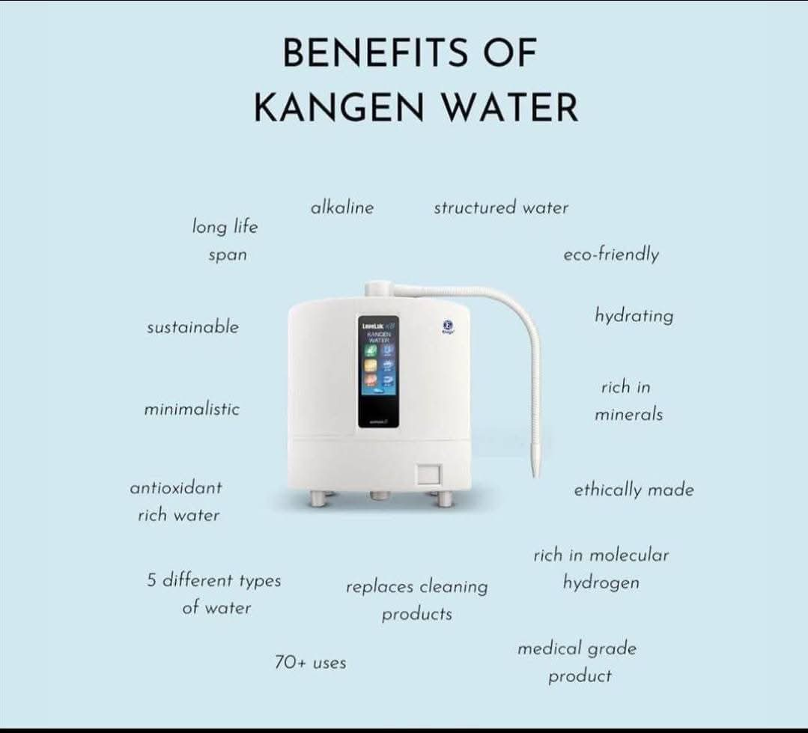
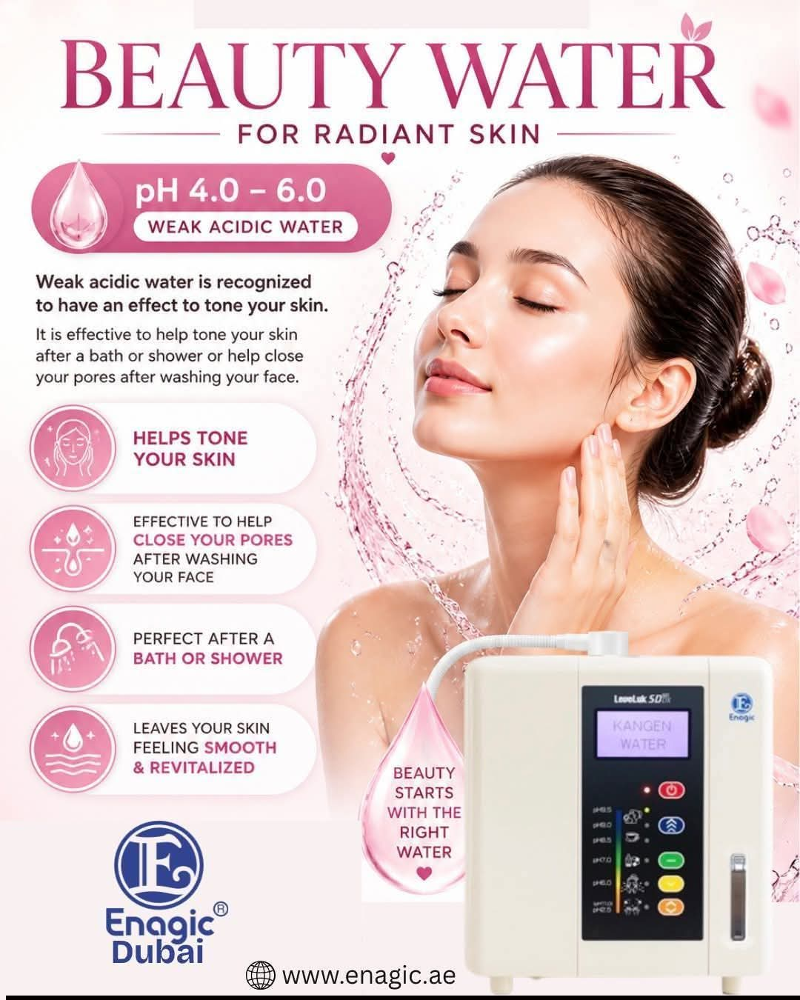
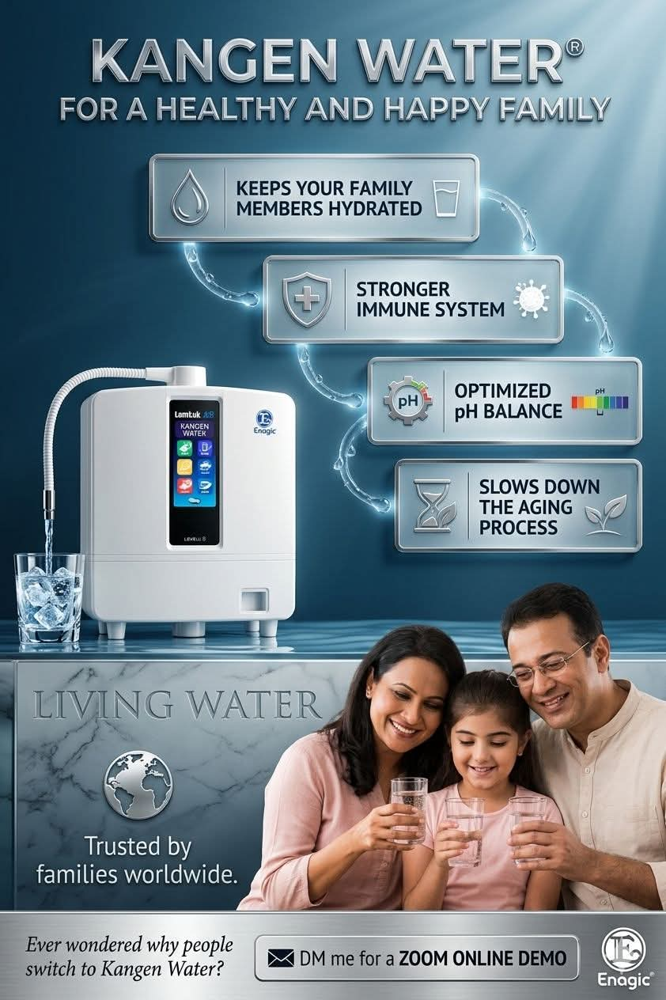
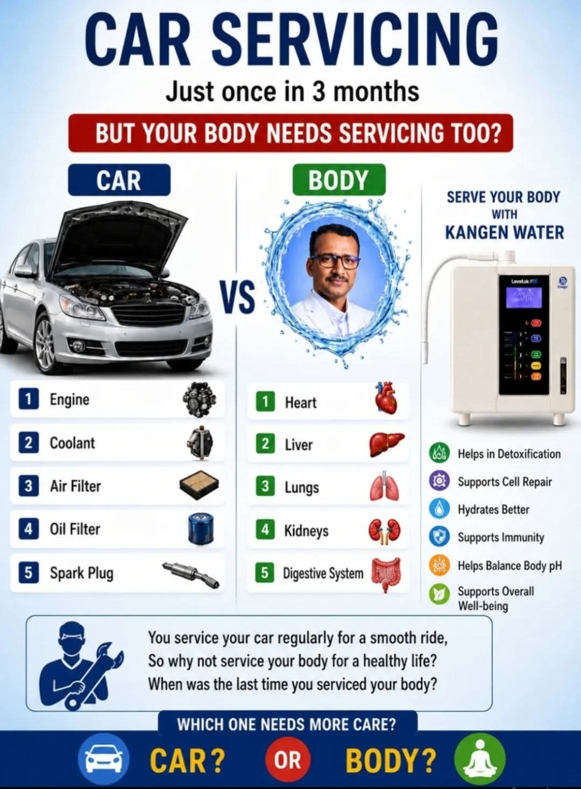

People switch to Kangen Water for all kinds of reasons — from simply enjoying the taste and staying better hydrated, to reducing the chemicals they use around the home. Here’s a look at what makes it a favorite.

Micro-clustered water is described as light and smooth — the kind of water you actually want to drink more of.
Hydrogen-rich water is popular among wellness fans for its association with helping neutralize free radicals.
Drinking water in the pH 8.5–9.5 range is preferred by those looking for an alternative to acidic sodas and soft drinks.
Beauty water is a gentle, natural toner that many use after washing their face or after a bath or shower.
Making your own water at home means fewer plastic bottles and fewer cleaning-product containers in the trash.
One machine replaces bottled water and a shelf of cleaning sprays, serving the household for years.

Weak acidic “beauty water” is a fan favorite in skincare routines. It’s used to help tone skin and refresh the face after washing, and it doubles as a light rinse after a bath or shower.

From the youngest to the oldest, Kangen Water fits into daily life at every stage. It keeps the family hydrated, supports everyday wellness habits, and gives you clean, great-tasting water on demand — no bottles to lug home.
It’s the kind of simple upgrade that quietly becomes part of the routine.

We service our cars every few months to keep them running smoothly. Drinking clean, quality water every day is one of the easiest small habits you can build to look after yourself and your family.
Good water won’t replace a healthy lifestyle — but it’s an easy, feel-good part of one.
Reach out and I’ll happily talk through the benefits, answer your questions, and help you decide.
Get in Touch